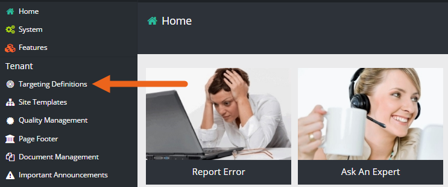
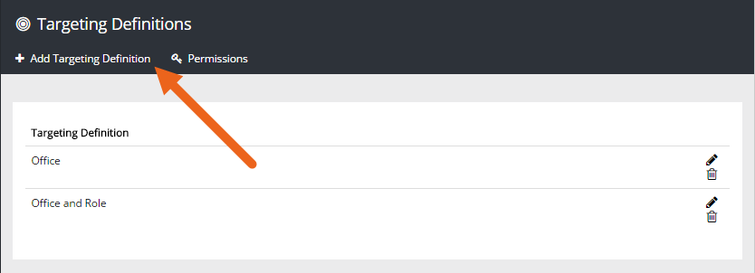
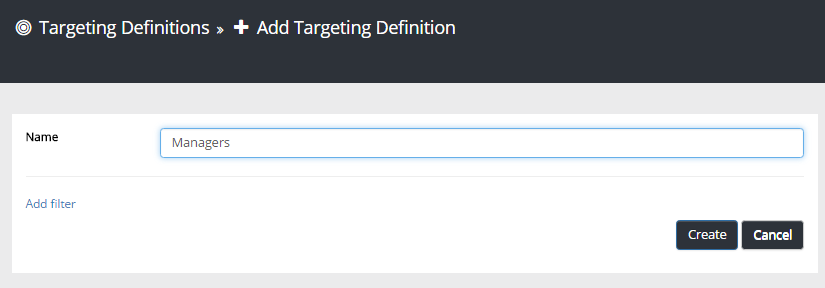
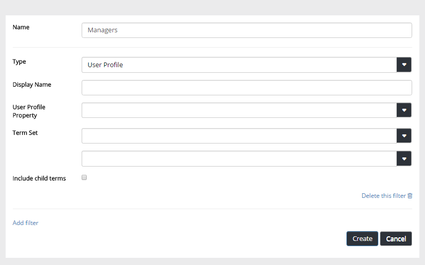
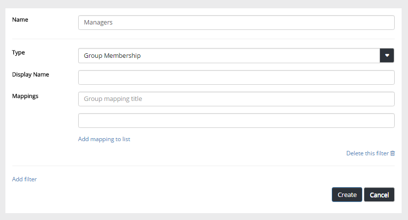
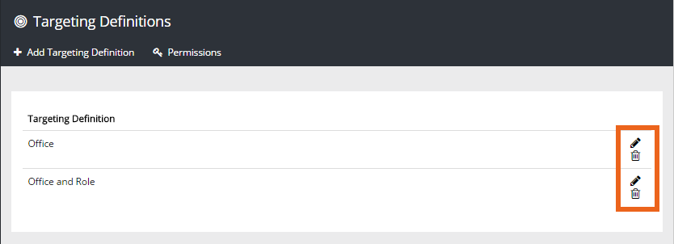

Omnia Targeting Definitions can be used for Banners, Important Announcements, Common Links and News.
Note! Targeting works a bit differently for Common Links and News and other web pages on one hand, and for Important Announcements and Banners on the other. For Important Announcements and Banners, all target definitions are available. For Common Links, News and other web pages, you have to decide which target definition to use.
The Targeting Definitions that should be possible to use is set up here. This will result in more or more fields to use for targeting by the editor or adminstrator creating the banner, important announcement etc.
There's two main approaches, either you create a Targeting Definition for a user profile and tie that definition to a term set or part of a term set (the term set must already exist). The result will be one ore more fields with where the editor can select terms for targeting. A suitable example could be if targeting should be possible to one or more countries or locations.
The other approach is to create target groups for example based on AD groups or óther permission groups available. If needed you can map several permission groups to form a single Target Definition.

The list of existing definitions is shown.


The available fields for settings change accordingly.
If you choose the type "User Profile", the following can be set:

Display name The field name the editor or administrator will see.
User Profile Property Select the User Profile property to be used, from the properties available.
Term Set Select term set to use. Then select term to set. Note: the term set must have been set up, you can't do it from here.
Include child terms If the term set includes child terms you can set this. If not selected the term selection must be specific. In an example with the term Country with a number of cities as child terms, if the option is selected just the country needs to be chosen.
If you choose the type "User Profile", the following can be set:

Display name The field name the editor or administrator will see.
Mappings You can set up a number of mappings. A mapping consists of one or more groups. Create a mapping this way:
For addional mappings, repeat the process.
Use the icons in the list to edit or delete targeting definitions:
